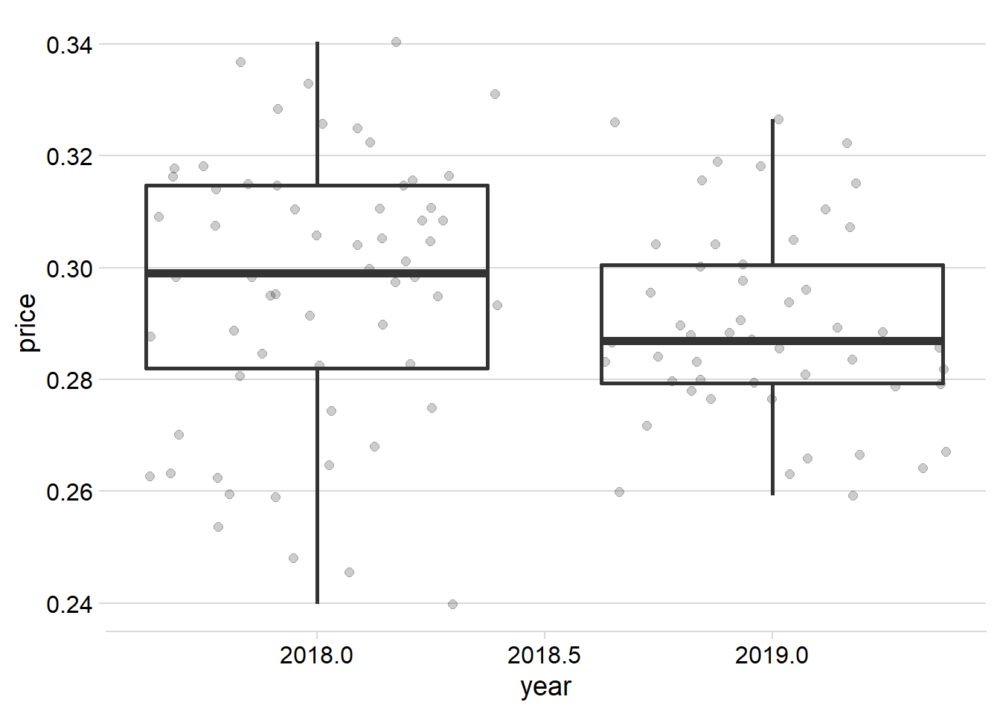
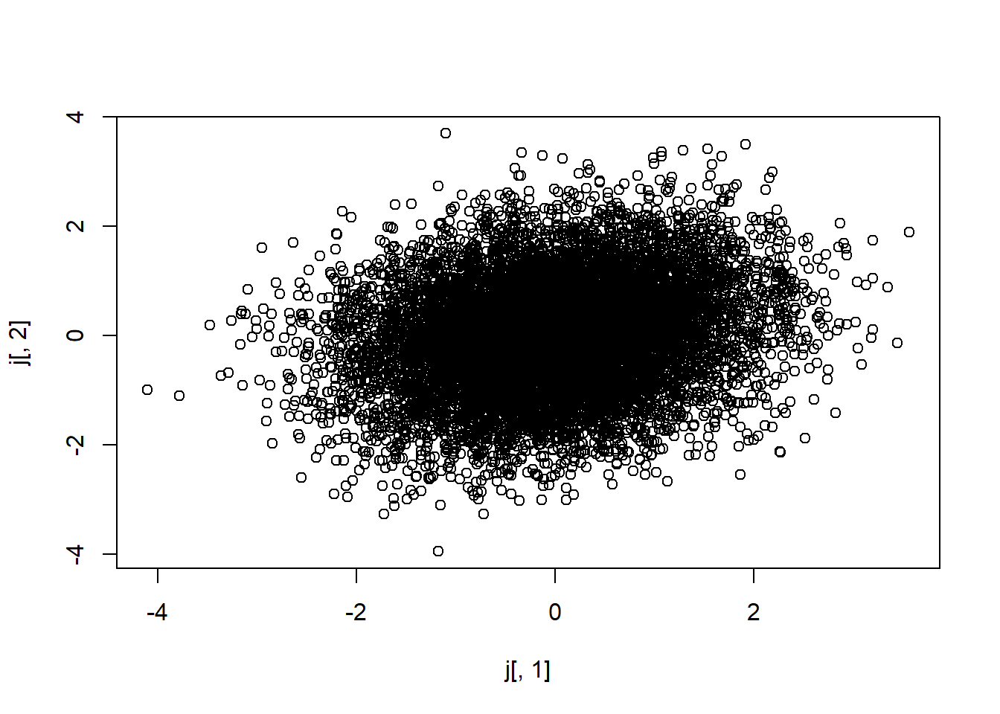
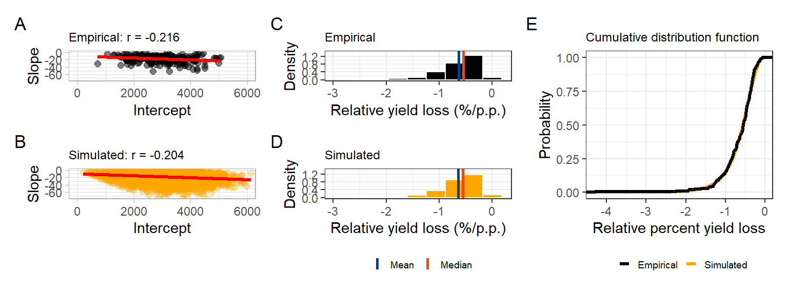

Data analysis
Packages
Here we load all the packages we ae going to use in the analysis.
library(tidyverse)
library(gsheet)
library(cowplot)
library(ggthemes)
library(DescTools)
library(minpack.lm)
library(agricolae)
library(readxl)
library(patchwork)Probability distributions
Fist step is to assemble the probability distributions for the for variable we are going to use for the simulations
SBR severity on untreated check.
Import data
Importing data of soybean rust severity (SBR) on the untreated check
sev_data = read.csv("data/sev_data.csv")
head(sev_data)Filtering only values of severity in the check treatment
sev_check = sev_data %>%
filter(active_ingredient == "check")
head(sev_check)Empirical distribution
sev_check %>%
ggplot(aes(severity/100))+
geom_histogram(bins = 20, color = "black", fill = "gray")Modeling
Since severity in proportional terms is between zero and one, we fit the empirical distribution into a beta probability distribution. For that we need to find the shape and scale parameters of the beta distribution function.
For that, obtain the empirical cumulative distribution and fit to the beta cumulative distribution.
sev = sev_check$severity
Fx= environment(ecdf(sev))$y
x = environment(ecdf(sev))$x/100
summary(nlsLM(Fx ~ pbeta(x, shape1, shape2, log = FALSE) ,
start = c(shape1 = 1, shape2 = 1),
control = nls.lm.control(maxiter = 100000)))## Warning in nls.lm(par = start, fn = FCT, jac = jac, control = control, lower =
## lower, : resetting `maxiter' to 1024!##
## Formula: Fx ~ pbeta(x, shape1, shape2, log = FALSE)
##
## Parameters:
## Estimate Std. Error t value Pr(>|t|)
## shape1 1.70736 0.02761 61.83 <2e-16 ***
## shape2 1.26581 0.01925 65.75 <2e-16 ***
## ---
## Signif. codes: 0 '***' 0.001 '**' 0.01 '*' 0.05 '.' 0.1 ' ' 1
##
## Residual standard error: 0.02053 on 186 degrees of freedom
##
## Number of iterations to convergence: 6
## Achieved convergence tolerance: 1.49e-08Kolmogorov-Smirnov Test
ks.test(Fx,pbeta(x, 1.707, 1.266) )## Warning in ks.test(Fx, pbeta(x, 1.707, 1.266)): p-value will be approximate in
## the presence of ties##
## Two-sample Kolmogorov-Smirnov test
##
## data: Fx and pbeta(x, 1.707, 1.266)
## D = 0.053191, p-value = 0.953
## alternative hypothesis: two-sidedplot(x,Fx)
curve(pbeta(x, 1.707, 1.266),0,1, add = T)plot(Fx,pbeta(x, 1.707, 1.266) )
abline(a=0,b=1)Visualization
sev_dist_plot = sev_check %>%
ggplot(aes(severity/100))+
geom_histogram(aes(y = ..density..),bins = 10, color = "white", fill = "#AC08FF")+
stat_function(fun=function(x) dbeta(x, 1.707, 1.266), color= "black", size = 1.2)+
theme_bw()+
labs(x="Severity (proportion)", y = "Density")
sev_dist_plot# ggsave("figs/sev_dist.png", dpi=600, height = 3, width = 4)Soybean price
Import data
soybean = gsheet2tbl("https://docs.google.com/spreadsheets/d/1-jQ9OgWdLQCb0iB0FqbrhuVi7LiNhqxvf9QU4-iuc3o/edit#gid=1085329359")
head(soybean)conversion to US dollar
sbr_price = soybean %>%
filter(year>=2018) %>%
mutate(price = (price/60)/4,
national_price = (national_price/60)/4)
sbr_pricesbr_price %>%
ggplot(aes(year,price)) +
geom_jitter(alpha =.2, size =2)+
geom_boxplot(aes(group = year), fill = NA, size= 1)+
scale_color_gradient()+
theme_minimal_hgrid()
# facet_wrap(~state)Mean and Standad deviantion
mean(sbr_price$price)## [1] 0.2932792sd(sbr_price$price)## [1] 0.02167031Empirical distribution
sbr_price %>%
ggplot(aes(price))+
geom_histogram(bins = 10, fill = "steelblue", color = "white")+
theme_bw()+
labs(x = "Soybean prince")+
scale_x_continuous(breaks = seq(0,1,by=0.025))hist((sbr_price$price), prob = T)
curve(dnorm(x, mean(sbr_price$price), sd(sbr_price$price)),0.15,0.35, add = T)plot(ecdf(sbr_price$price))
curve(pnorm(x, mean(sbr_price$price), sd(sbr_price$price)),0.2,0.35, add = T)
Mean and median
mean(sbr_price$price)## [1] 0.2932792median(sbr_price$price)## [1] 0.2935692Shapiro
shapiro.test(sbr_price$price)##
## Shapiro-Wilk normality test
##
## data: sbr_price$price
## W = 0.99021, p-value = 0.6164Kolmogorov-Smirnov Test
Fx = environment(ecdf(sbr_price$price))$y
x= environment(ecdf(sbr_price$price))$x
ks.test(Fx, pnorm(x, mean(sbr_price$price), sd(sbr_price$price)))##
## Two-sample Kolmogorov-Smirnov test
##
## data: Fx and pnorm(x, mean(sbr_price$price), sd(sbr_price$price))
## D = 0.054545, p-value = 0.9967
## alternative hypothesis: two-sidedplot(Fx, pnorm(x, mean(sbr_price$price), sd(sbr_price$price)))Vizualization
price_plot = sbr_price %>%
ggplot(aes(price))+
geom_histogram(aes(y = ..density..),bins = 10, color = "white", fill = "#1C8C20")+
stat_function(fun=function(x) dnorm(x, mean(sbr_price$price), sd(sbr_price$price)), color= "black", size = 1.2)+
theme_bw()+
labs(x="Soybean price (US$/kg)", y = "Density")+
scale_x_continuous(breaks = seq(0,1,by=0.025))
price_plot# ggsave("figs/sev_dist.png", dpi=600, height = 3, width = 4)Regression coeficients
import data
Importing regression Slope and intercept data from the relationship between SBR severity and yield
damage_data = read_excel("data/dados histograma.xlsx") %>%
mutate(Slope = b1,
Intercept = b0) %>%
dplyr::select(-b1,-b0)
head(damage_data)Empirical distribution
Visualizando os hitogramas do slope e intercepto
damage_data %>%
gather(2:3, key = "par", value = "value") %>%
ggplot(aes(value))+
geom_histogram(bins = 10, color = "gray40", fill = "gray90")+
facet_wrap(~par, scales = "free_x")+
theme_bw()Regression lines
ggplot() +
geom_point(aes(x = 0:100, y = seq(0,5000,by = 50)), color = NA)+
geom_abline(data =damage_data, aes(slope = Slope, intercept = Intercept),
alpha = 0.5, color = "gray")+
geom_abline(intercept = 2977,slope = -18, size = 1.2)+
geom_abline(intercept = 2862,slope = -19.4 , size = .51, linetype = 2)+
geom_abline(intercept = 3093,slope = -16.6, size = .51, linetype = 2)+
labs(x = "SBR Severity (%)", y = "Yield (kg/ha) ")+
theme_base()## Warning: Removed 101 rows containing missing values (geom_point).correlation
Correlation between slope and intercept
correlation(damage_data$Slope, damage_data$Intercept)##
## Pearson's product-moment correlation
##
## data: damage_data$Slope and damage_data$Intercept
## t = -3.144296 , df = 202 , p-value = 0.001915808
## alternative hypothesis: true rho is not equal to 0
## sample estimates:
## cor
## -0.2160089plot
corr_emp_plot = damage_data %>%
ggplot(aes(Intercept, Slope))+
geom_point(color = "black", size =2, alpha =0.5)+
# geom_density2d_filled()+
geom_smooth(method = "lm", se = F, color ="Red", size=1.2, fullrange=TRUE)+
theme_light()+
labs(title = "Empirical: r = -0.216")+
coord_cartesian(
xlim = c(0,6000),
ylim = c(-75,0)
)
corr_emp_plot## `geom_smooth()` using formula 'y ~ x'Cumulative density
Intercept
mean_intercept = mean(damage_data$Intercept)
sd_intercept = sd(damage_data$Intercept)
plot(ecdf(damage_data$Intercept))
curve(pnorm(x, mean_intercept,sd_intercept), 1000,5000, add = T, col = "red")Kolmogorov-Smirnov Test
Fx = environment(ecdf(damage_data$Intercept))$y
x= environment(ecdf(damage_data$Intercept))$x
ks.test(Fx, pnorm(x, mean(damage_data$Intercept), sd(damage_data$Intercept)))##
## Two-sample Kolmogorov-Smirnov test
##
## data: Fx and pnorm(x, mean(damage_data$Intercept), sd(damage_data$Intercept))
## D = 0.034314, p-value = 0.9997
## alternative hypothesis: two-sidedplot(Fx, pnorm(x, mean(damage_data$Intercept), sd(damage_data$Intercept)))intercep_plot = damage_data %>%
ggplot(aes(Intercept))+
geom_histogram(aes(y = ..density..),bins = 10, color = "white", fill = "#FF4917")+
stat_function(fun=function(x) dnorm(x, mean_intercept, sd_intercept), color ="black", size =1.2)+
theme_bw()+
labs(x="Intercept (kg/ha)", y = "Density")
intercep_plotSlope
mean_slope = mean(damage_data$Slope)
sd_slope = sd(damage_data$Slope)
plot(ecdf(damage_data$Slope))
curve(pnorm(x, mean_slope, sd_slope), -60,5, add = T, col = "red")Modeling
Fitting gamma distribution to the empirical cumulative density of the slope data
Fx =environment(ecdf(-damage_data$Slope))$y
x = environment(ecdf(-damage_data$Slope))$x
slope_reg = nlsLM(Fx ~ pgamma(x, shape, rate,log = FALSE) ,
start = c(shape = 2.5, rate = 0.13),
control = nls.lm.control(maxiter = 1024))
summary(slope_reg)##
## Formula: Fx ~ pgamma(x, shape, rate, log = FALSE)
##
## Parameters:
## Estimate Std. Error t value Pr(>|t|)
## shape 3.044261 0.031275 97.34 <2e-16 ***
## rate 0.168269 0.001929 87.22 <2e-16 ***
## ---
## Signif. codes: 0 '***' 0.001 '**' 0.01 '*' 0.05 '.' 0.1 ' ' 1
##
## Residual standard error: 0.014 on 201 degrees of freedom
##
## Number of iterations to convergence: 4
## Achieved convergence tolerance: 1.49e-08Kolmogorov-Smirnov Test
shape = summary(slope_reg)$coef[1]
rate = summary(slope_reg)$coef[2]
Fx =environment(ecdf(-damage_data$Slope))$y
x = environment(ecdf(-damage_data$Slope))$x
ks.test(Fx, pgamma(x, shape, rate))##
## Two-sample Kolmogorov-Smirnov test
##
## data: Fx and pgamma(x, shape, rate)
## D = 0.034483, p-value = 0.9997
## alternative hypothesis: two-sidedshape = summary(slope_reg)$coef[1]
rate = summary(slope_reg)$coef[2]
slope_plot = damage_data %>%
ggplot(aes(Slope))+
geom_histogram(aes(y = ..density..),bins = 10, color = "white", fill = "#159EE6")+
stat_function(fun=function(x) dgamma(-x, shape, rate), size = 1.2, color = "black")+
theme_bw()+
labs(x="Slope (kg/p.p.)", y = "Density")
slope_plot
Kolmogorov-Smirnov Test
ks.test(Fx,pgamma(x, shape, rate))##
## Two-sample Kolmogorov-Smirnov test
##
## data: Fx and pgamma(x, shape, rate)
## D = 0.034483, p-value = 0.9997
## alternative hypothesis: two-sidedMultivariate Simulation using copula
Simulating two normal distributions correlated #### Function
######################################
gera.norm.bid.geral<-function(tamanho.amostra,correlacao,m1,m2,sigma1,sigma2)
{
ro<-correlacao
n<-tamanho.amostra
x<-matrix(0,n,2)
for (i in 1:n)
{x[i,1]<-rnorm(1,m1,sigma1)
x[i,2]<-rnorm(1,m2+ro*sigma1/sigma2*(x[i,1]-m1),sigma2*(sqrt(1-ro^2)))
}
return(x)
}Test for correlation of 0.9
#testando
j<-gera.norm.bid.geral(1000,0.9,0,0,1,1)
plot(j[,1],j[,2])For our data, we will use the positive correlation, becouse we want positive values of slope
#testando
j<-gera.norm.bid.geral(10000,0.2160089,0,0,1,1)
plot(j[,1],j[,2])
Intercept
Now we obtaing the probabilities from first distribution and insert in the quantiles function for the normal distribution of the intercept
b0 = pnorm(j[,2])
b0_t = qnorm(b0, 2977, 58.9*sqrt(210))
hist(b0_t, prob = T)
curve(dnorm(x, mean_intercept, sd_intercept), 0, 6000, add = T)
Slope
Now we obtaing the probabilities from first distribution and insert in the quantiles function for the gamma ditribution and multiply for -1 for obtain the negative outputs of the coeficient
b1 = pnorm(j[,1])
b1_t = qgamma(b1, shape, rate = rate)*-1
hist(b1_t, prob = T)
curve(dgamma(-x,shape=shape, rate = rate), -60,0, add = T)Now we recalculate the correlation between the simulated coeficients. It matchs!
correlation(b1_t, b0_t)##
## Pearson's product-moment correlation
##
## data: b1_t and b0_t
## t = -20.577 , df = 9998 , p-value = 0
## alternative hypothesis: true rho is not equal to 0
## sample estimates:
## cor
## -0.2015667Viz. the correlation
corr_sim_plot = data.frame(b0_t,b1_t ) %>%
mutate(alfa =(b1_t/b0_t)*100 ) %>%
filter(alfa > -3 & alfa < 0) %>%
ggplot(aes(b0_t,b1_t ))+
geom_point( size =2, color = "orange", alpha =0.3)+
# geom_density_2d(color = "black")+
geom_smooth(method = lm, color = "red", se = F, size = 1.2)+
theme_light()+
labs(y= "Slope",
x = "Intercept",
title = "Simulated: r = -0.204")+
coord_cartesian(
xlim = c(0,6000),
ylim = c(-75,0)
)
corr_sim_plot## `geom_smooth()` using formula 'y ~ x'Combo distributions
# plot_grid(sev_dist_plot,price_plot, intercep_plot, slope_plot, labels = "AUTO", nrow =2)
(sev_dist_plot+price_plot)/
(intercep_plot+slope_plot)+
# (corr_emp_plot+corr_sim_plot)+
plot_annotation(tag_levels = 'A')&
theme(plot.title = element_text(size =8))ggsave("figs/coef_dist.png", dpi = 600, height = 5, width = 6)
ggsave("figs/coef_dist.pdf", dpi = 600, height = 5, width = 6)Relative yield loss
Here we calculate the yield relative loss due to SBR severity using the original data set
empiric_ryl= damage_data %>%
mutate(cc = (Slope/Intercept)*100) %>%
filter( cc > -3 & cc <0 )
head(empiric_ryl)stat_emp_ryl =empiric_ryl%>%
summarise(data = "empirical",
mean = mean(cc),
median = median(cc),
variance = var(cc))real_RYL= empiric_ryl %>%
ggplot(aes(cc))+
geom_histogram(aes(y = ..density..),bins = 10, color = "white", fill = "black")+
scale_y_continuous(limits = c(0,1.4),breaks = seq(0, 1.4,by = 0.4))+
geom_vline(data = stat_emp_ryl, aes(xintercept = mean, color = "Mean"),size =1)+
geom_vline(data = stat_emp_ryl, aes(xintercept = median, color = "Median"),size =1)+
theme_bw()+
scale_color_calc()+
labs(x = "Relative yield loss (%/p.p.)",
y = "Density",
color = "",
title = "Empirical")+
xlim(-3,0.2)+
theme(legend.position = "top")
real_RYL## Warning: Removed 2 rows containing missing values (geom_bar).And here we calculate the relative yield loss due to SBR severity using the simulated data set
simul_ryl = data.frame(b0_t, b1_t, cc = (b1_t/b0_t)*100) %>%
filter( cc > -3 & cc <0 )
head(simul_ryl)stat_suml_ryl = simul_ryl%>%
summarise(data = "Simulated",
mean = mean(cc),
median = median(cc),
variance = var(cc))simul_RYL =simul_ryl %>%
ggplot(aes(cc))+
geom_histogram(aes(y = ..density..),bins = 10, color = "white", fill = "orange")+
scale_y_continuous(limits = c(0,1.4),breaks = seq(0, 1.4,by = 0.4))+
geom_vline(data = stat_suml_ryl, aes(xintercept = mean, color = "Mean"),size =1)+
geom_vline(data = stat_suml_ryl, aes(xintercept = median, color = "Median"),size =1)+
theme_bw()+
scale_color_calc()+
labs(x = "Relative yield loss (%/p.p.)",
y = "Density",
color ="",
title = "Simulated")+
xlim(-3,0.2)+
theme(legend.position = "top")
simul_RYL## Warning: Removed 2 rows containing missing values (geom_bar).Comparision of mean, median and variance
damage_data %>%
mutate(cc = (Slope/Intercept)*100) %>%
filter( cc > -3 & cc <0 ) %>%
summarise(data = "empirical",
mean = mean(cc),
median = median(cc),
variance = var(cc)) %>%
bind_rows(
data.frame(b0_t, b1_t, cc = (b1_t/b0_t)*100) %>%
filter( cc > -3 & cc <0 ) %>%
summarise(data = "Simulated",
mean = mean(cc),
median = median(cc),
variance = var(cc))
)Kolmogorov-Smirnov Test
actual_cc = damage_data %>%
mutate(cc = (Slope/Intercept)*100)
simulated_cc = data.frame(b0_t, b1_t, cc = (b1_t/b0_t)*100) %>%
filter( cc > -3 & cc <0 )Distribution
ks.test(actual_cc$cc, simulated_cc$cc)##
## Two-sample Kolmogorov-Smirnov test
##
## data: actual_cc$cc and simulated_cc$cc
## D = 0.052548, p-value = 0.639
## alternative hypothesis: two-sidedcummulative distribution
fx_actual = environment(ecdf(actual_cc$cc))$y
fx_simu = environment(ecdf(simulated_cc$cc))$y
ks.test((fx_actual),(fx_simu))## Warning in ks.test((fx_actual), (fx_simu)): p-value will be approximate in the
## presence of ties##
## Two-sample Kolmogorov-Smirnov test
##
## data: (fx_actual) and (fx_simu)
## D = 0.0049015, p-value = 1
## alternative hypothesis: two-sidedecdf_damage = ggplot()+
stat_ecdf(aes(simulated_cc$cc,color = "Simulated"), size=1.2,geom = "step")+
stat_ecdf(aes(actual_cc$cc, color = "Empirical"), size=1.2,geom = "step")+
theme_bw()+
scale_color_manual(values = c("black","orange"))+
labs(y = "Probability",
x = "Relative percent yield loss",
color ="",
title = "Cumulative distribution function")+
theme(legend.position = "top",
legend.background = element_blank())
ecdf_damageCombo Yield loss
((corr_emp_plot/corr_sim_plot)|(real_RYL/simul_RYL)+plot_layout(guides = 'collect')| ecdf_damage ) +
# plot_layout(heights = c(1,1,0.5))+
plot_annotation(tag_levels = 'A') &
theme(legend.position = 'bottom',
plot.title = element_text(size=9),
legend.key.size= unit(3, "mm"),
legend.text = element_text(size = 7))## `geom_smooth()` using formula 'y ~ x'
## `geom_smooth()` using formula 'y ~ x'## Warning: Removed 2 rows containing missing values (geom_bar).
## Warning: Removed 2 rows containing missing values (geom_bar).
ggsave("figs/RYL.png", dpi = 600, height = 5, width = 10)## `geom_smooth()` using formula 'y ~ x'
## `geom_smooth()` using formula 'y ~ x'## Warning: Removed 2 rows containing missing values (geom_bar).
## Warning: Removed 2 rows containing missing values (geom_bar).ggsave("figs/RYL.pdf", dpi = 600, height = 5, width = 10)## `geom_smooth()` using formula 'y ~ x'
## `geom_smooth()` using formula 'y ~ x'## Warning: Removed 2 rows containing missing values (geom_bar).
## Warning: Removed 2 rows containing missing values (geom_bar).Simulations
set.seed(1)
n=40000
lambda = seq(0,1, by=0.05)
fun_price = seq(-10, 260, by=15)
n_aplication = 1
operational_cost = 10
comb_matrix = as.matrix(data.table::CJ(lambda,fun_price))
colnames(comb_matrix) = c("lambda","fun_price")
comb_matrix = cbind(comb_matrix,operational_cost, n_aplication)
C = comb_matrix[,"n_aplication"]*(comb_matrix[,"operational_cost"]+comb_matrix[,"fun_price"] )
comb_matrix = cbind(comb_matrix,C)
N = length(comb_matrix[,1])*n
big_one = matrix(0, ncol = 12, nrow =N)
big_one[,1] = rep(comb_matrix[,1],n)
big_one[,2] = rep(comb_matrix[,2],n)
big_one[,3] = rep(comb_matrix[,3],n)
big_one[,4] = rep(comb_matrix[,4],n)
big_one[,5] = rep(comb_matrix[,5],n)
set.seed(1)
sn = rbeta(N, 1.707, 1.266)
sf = sn*(1-big_one[,1])
# simulating the coeficientes
set.seed(1)
normal_correlated<-gera.norm.bid.geral(N,0.21,0,0,1,1)
b0_n = pnorm(normal_correlated[,2])
b1_n = pnorm(normal_correlated[,1])
b0 = qnorm(b0_n, mean_intercept,sd_intercept)
b1 = -qgamma(b1_n, shape, rate,)
rm(b0_n,b1_n,normal_correlated)
# b0[b0<0] = 0.0001
# Calculating the alha coeficient
alfa = (b1/b0)*100
# alfa[alfa > 0] = 0
# alfa[alfa < -3] = -3
# Calculating yield gain
# yn = b0*(1+sn*alfa) # Yield non-treated
# yf = b0*(1+sf*alfa) # Yield treated
yn = b0 - (-alfa*b0*sn)
yf = b0 - (-alfa*b0*sf)
# yn[yn<0] = 0
# yf[yf<0] = 0
# yield_gain = yf-yn # yield gain
# yield_gain_perc = (1-(yn/yf))*100
# Simulating soybean price
set.seed(1)
soy_price = rnorm(N, mean(sbr_price$price),sd(sbr_price$price))
# income = yield_gain*soy_price # calculating the income
big_one[,6] = yn
big_one[,7] = yf
big_one[,8] = soy_price
big_one[,9] = b1
big_one[,10] = alfa
big_one[,11] = b0
big_one[,12] = sn
colnames(big_one) = c("lambda","fun_price","operational_cost","n_aplication","C","yn","yf","soy_price","b1","alfa","b0", "sn")big_one_df = as.data.frame(big_one) %>%
filter(b0>=0) %>%
filter(yn>0) %>%
filter(alfa > -3 & alfa < 0) %>%
mutate(yield_gain = yf-yn,
# yield_gain_perc = ((yf - yn)/yn)*100,
yield_gain_perc = ((yf/yn)-1)*100,
income = yield_gain*soy_price,
CP = C/soy_price,
# profit = (yield_gain>=CP)*1,
profit = (income>=C)*1)Breacking even
Tetris
big_one_df %>%
# mutate(sev_class = case_when(sn > median(sn) ~ "High severity",
# sn <= median(sn) ~ "Low severity")) %>%
filter(lambda >=0.3) %>%
group_by(lambda, C) %>%
summarise(n=n(),sumn = sum(profit), prob = sumn/n) %>%
# filter(prob>0.5) %>%
mutate(prob2 = case_when(prob < 0.50 ~ "Pr(I \u2265 C) \u2264 0.5 ",
prob >= 0.50 ~ "Pr(I \u2265 C) > 0.5")) %>% #,
# # prob >= 0.75 ~ "75% \u2264 p < 100% " )) %>%
ggplot(aes(as.factor(lambda*100),as.factor(C), fill = prob,
# color = prob2
))+
geom_tile(size = 0.5, color ="white")+
scale_fill_viridis_b(option ="B", direction = -1)+
# scale_fill_manual(values = c("darkred", "steelblue"))+
# scale_fill_gradient2(low = "#E60E00",mid = "#00030F", high = "#55E344",midpoint = 0.5)+
scale_color_manual(values = c("#E60E00","#55E344"))+
# scale_fill_gradient2(low = "red",mid = "black", high = "steelblue",midpoint = 0.5)+
# scale_color_manual(values = c("red","steelblue")) +
guides(color = guide_legend(override.aes = list(size=2)))+
# scale_fill_viridis_d(option = "B")+
labs(x = "Fungicide efficacy (%)",
y = "Fungicide + Application cost ($)",
fill = "Pr(I \u2265 C)",
color ="" )+
# facet_wrap(~sev_class)+
theme_light()## `summarise()` regrouping output by 'lambda' (override with `.groups` argument)# ggsave("figs/tetris.png", dpi = 600, height = 5, width = 7)Tetris 2
median(big_one_df$b0)## [1] 2995.191tetris_plot = function(s_class, y_class, pal =1){
big_one_df %>%
mutate(sev_class = case_when(sn > median(sn) ~ "High severity",
sn <= median(sn) ~ "Low severity"),
yield_class = case_when(b0 > median(b0) ~ "High yield",
b0 <= median(b0) ~ "Low yield")) %>%
filter(lambda >=0.3) %>%
group_by(lambda, C, sev_class,yield_class) %>%
summarise(n=n(),sumn = sum(profit), prob = sumn/n) %>%
mutate(prob = case_when(prob >= .75 ~ "\u2265 0.75",
prob < .75 & prob >= 0.5 ~ "0.50-0.75",
prob < .50 & prob >= .25 ~ "0.25-0.50",
prob < .25 ~ "< 0.25"),
prob =factor(prob,level = c("< 0.25","0.25-0.50","0.50-0.75", "\u2265 0.75"))) %>%
filter(sev_class== s_class,
yield_class == y_class) %>%
ggplot(aes(as.factor(lambda*100),as.factor(C), fill = prob))+
geom_tile(size = 0.25, color ="gray70")+
scale_fill_brewer(palette = pal)+
labs(x = "Fungicide efficacy (%)",
y = "Fungicide + Application cost ($)",
fill = "Probability",
color ="" )+
# facet_grid(~sev_class)+
guides(color = guide_legend(override.aes = list(size=2)))+
theme_light()+
theme(text = element_text(size = 10),
legend.position = "bottom",
axis.text = element_text(size = 7),
panel.spacing = unit(1.75, "lines"),
strip.background =element_rect(fill="NA"),
strip.text = element_text(color = "black", size =12))
}tetris_Sh_Sh = tetris_plot(s_class = "High severity",
y_class = "High yield",pal =1)+
labs(title = "High severity",
subtitle = "High yield")## `summarise()` regrouping output by 'lambda', 'C', 'sev_class' (override with `.groups` argument)tetris_Sl_Yh = tetris_plot(s_class = "Low severity",
y_class = "High yield",pal =1
)+
labs(title = "Low severity",
subtitle = "High yield")## `summarise()` regrouping output by 'lambda', 'C', 'sev_class' (override with `.groups` argument)tetris_Sh_Yl = tetris_plot(s_class = "High severity",
y_class = "Low yield",pal =2
)+
labs(title = "High severity",
subtitle = "Low yield")## `summarise()` regrouping output by 'lambda', 'C', 'sev_class' (override with `.groups` argument)tetris_Sl_Sh = tetris_plot(s_class = "Low severity",
y_class = "Low yield",pal =2
)+
labs(title = "Low severity",
subtitle = "Low yield")## `summarise()` regrouping output by 'lambda', 'C', 'sev_class' (override with `.groups` argument)Combo tetris
((tetris_Sh_Sh+tetris_Sl_Yh)+plot_layout(guides = "collect"))/((tetris_Sh_Yl+tetris_Sl_Sh)+
plot_layout(guides = "collect"))+
plot_annotation(tag_levels = 'A')&
theme(legend.position = "bottom",
plot.title = element_text(size = 8),
plot.subtitle = element_text(size = 8))ggsave("figs/box_classes.png", dpi = 500, height = 8.5, width = 7.5)
ggsave("figs/box_classes.pdf", dpi = 500, height = 8.5, width = 7.5)Yield gain
Absolute gain
overal_yg = big_one_df %>%
mutate(sev_class = " Overall") %>%
group_by(lambda,sev_class) %>%
summarise(yield_gain_median = median(yield_gain),
yield_gain_mean = mean(yield_gain),
up_95 = quantile(yield_gain, 0.975),
low_95 = quantile(yield_gain, 0.025),
up_75 = quantile(yield_gain, 0.75),
low_75 = quantile(yield_gain, 0.25))## `summarise()` regrouping output by 'lambda' (override with `.groups` argument)# m_absol = lm(yield_gain ~ lambda, big_one_df %>% mutate(lambda=lambda*100))
# summary(m_absol)over_gg_kg = overal_yg %>%
ggplot(aes(lambda*100,yield_gain_mean))+
geom_line(aes(lambda*100, low_95),
linetype = 2,
size = 0.7,
fill = NA)+
geom_line(aes(lambda*100, up_95),
linetype = 2,
size = 0.7,
fill = NA)+
geom_line(size = 1.2, aes(lambda*100,yield_gain_median))+
# scale_linetype_manual(values=c(1,2))+
theme_light()+
# geom_abline(slope = 9.61, intercept = -0.1 )+
# coord_equal()+
labs(x = "Fungicide efficacy (%)",
y = "Yield gain (kg/ha)",
color = "Fungicide mixture", #(Dalla lana et al., 2018)
linetype = "", fill = "")## Warning: Ignoring unknown parameters: fill
## Warning: Ignoring unknown parameters: fillover_gg_kgygain_plot = function(s_class){
big_one_df %>%
mutate(sev_class = case_when(sn > median(sn) ~ "High severity",
sn <= median(sn) ~ "Low severity"),
yield_class = case_when(b0 > median(b0) ~ "High yield",
b0 <= median(b0) ~ "Low yield")) %>%
group_by(lambda, sev_class,yield_class ) %>%
summarise(yield_gain_median = median(yield_gain),
yield_gain_mean = mean(yield_gain),
up_95 = quantile(yield_gain, 0.975),
low_95 = quantile(yield_gain, 0.025),
up_75 = quantile(yield_gain, 0.75),
low_75 = quantile(yield_gain, 0.25)) %>%
mutate(sev_class = factor(sev_class, levels = c("Low severity","High severity"))) %>%
filter(sev_class ==s_class ) %>%
ggplot(aes(lambda*100,yield_gain_mean))+
geom_line(aes(lambda*100, low_95, color = yield_class),
linetype = 2,
size = 0.7,
fill = NA)+
geom_line(aes(lambda*100, up_95,color = yield_class),
linetype = 2,
size = 0.7,
fill = NA)+
geom_line(size = 1.2, aes(lambda*100,yield_gain_median,color = yield_class))+
# scale_color_manual(values = c("#009628","#8A0004"))+
scale_color_manual(values = c("steelblue","#009628"))+
theme_light()+
coord_cartesian(ylim=c(0,3000))+
labs(x = "Fungicide efficacy (%)",
y = "Yield gain (kg/ha)",
color = "Attainable Yield", #(Dalla lana et al., 2018)
linetype = "")
}
high_sev_yg = ygain_plot(s_class = "High severity")+
labs(title = "High severity")## `summarise()` regrouping output by 'lambda', 'sev_class' (override with `.groups` argument)## Warning: Ignoring unknown parameters: fill
## Warning: Ignoring unknown parameters: filllow_sev_yg = ygain_plot(s_class = "Low severity")+
labs(title = "Low severity")## `summarise()` regrouping output by 'lambda', 'sev_class' (override with `.groups` argument)## Warning: Ignoring unknown parameters: fill
## Warning: Ignoring unknown parameters: fillhigh_sev_yg+low_sev_ygbig_one_df %>%
mutate(sev_class = case_when(sn > median(sn) ~ "High severity",
sn <= median(sn) ~ "Low severity"),
yield_class = case_when(b0 > median(b0) ~ "High yield",
b0 <= median(b0) ~ "Low yield")) %>%
group_by(lambda, sev_class,yield_class ) %>%
summarise(yield_gain_mean = mean(yield_gain),
yield_gain_median = median(yield_gain, na.rm = T),
low_95 = quantile(yield_gain, 0.025),
up_95 = quantile(yield_gain, 0.975),
up_75 = quantile(yield_gain, 0.75),
low_75 = quantile(yield_gain, 0.25)) %>%
bind_rows(overal_yg) %>%
filter(lambda==.75) %>%
arrange(yield_class)## `summarise()` regrouping output by 'lambda', 'sev_class' (override with `.groups` argument)Percent gain
overal_percet = big_one_df %>%
mutate(sev_class = " Overall") %>%
group_by(lambda,sev_class) %>%
mutate(yield_gain_perc = case_when(yield_gain_perc>quantile(yield_gain_perc,0.999)~quantile(yield_gain_perc,0.999),
yield_gain_perc<=quantile(yield_gain_perc,0.999) ~yield_gain_perc)) %>%
summarise(yield_gain_mean = mean(yield_gain_perc,na.rm = T),
yield_gain_median = median(yield_gain_perc,na.rm = T),
low_95 = quantile(yield_gain_perc, 0.025,na.rm = T),
up_95 = quantile(yield_gain_perc, 0.975,na.rm = T),
up_75 = quantile(yield_gain_perc, 0.75,na.rm = T),
low_75 = quantile(yield_gain_perc, 0.25,na.rm = T)) ## `summarise()` regrouping output by 'lambda' (override with `.groups` argument)over_gg = overal_percet %>%
ggplot(aes(lambda*100,yield_gain_mean))+
geom_line(aes(lambda*100, low_95),
linetype = 2,
size = 0.7,
fill = NA)+
geom_line(aes(lambda*100, up_95),
linetype = 2,
size = 0.7,
fill = NA)+
geom_line(size = 1.2, aes(lambda*100,yield_gain_median))+
# scale_linetype_manual(values=c(1,2))+
theme_light()+
# coord_equal()+
labs(x = "Fungicide efficacy (%)",
y = "Yield gain %",
color = "Fungicide mixture", #(Dalla lana et al., 2018)
linetype = "", fill = "")+
coord_cartesian(ylim = c(0,100), xlim = c(-10,100))## Warning: Ignoring unknown parameters: fill
## Warning: Ignoring unknown parameters: fillover_ggygain_perc_plot = function(s_class){
big_one_df %>%
mutate(sev_class = case_when(sn > median(sn) ~ "High severity",
sn <= median(sn) ~ "Low severity"),
yield_class = case_when(b0 > median(b0) ~ "High yield",
b0 <= median(b0) ~ "Low yield")) %>%
group_by(lambda, sev_class,yield_class ) %>%
summarise(yield_gain_median = median(yield_gain_perc),
yield_gain_mean = mean(yield_gain_perc),
up_95 = quantile(yield_gain_perc, 0.975),
low_95 = quantile(yield_gain_perc, 0.025),
up_75 = quantile(yield_gain_perc, 0.75),
low_75 = quantile(yield_gain_perc, 0.25)) %>%
mutate(sev_class = factor(sev_class, levels = c("Low severity","High severity"))) %>%
filter(sev_class ==s_class ) %>%
ggplot(aes(lambda*100,yield_gain_mean))+
geom_line(aes(lambda*100, low_95, color = yield_class),
linetype = 2,
size = 0.7,
fill = NA)+
geom_line(aes(lambda*100, up_95,color = yield_class),
linetype = 2,
size = 0.7,
fill = NA)+
geom_line(size = 1.2, aes(lambda*100,yield_gain_median,color = yield_class))+
# scale_color_manual(values = c("#009628","#8A0004"))+
scale_color_manual(values = c("steelblue","#009628"))+
theme_light()+
labs(x = "Fungicide efficacy (%)",
y = "Yield gain (%)",
color = "Attainable Yield",
linetype = "", fill = "")+
coord_cartesian(ylim = c(0,100))
}
high_sev_yg_perc = ygain_perc_plot(s_class = "High severity")+
labs(title = "High severity")## `summarise()` regrouping output by 'lambda', 'sev_class' (override with `.groups` argument)## Warning: Ignoring unknown parameters: fill
## Warning: Ignoring unknown parameters: filllow_sev_yg_perc = ygain_perc_plot(s_class = "Low severity")+
labs(title = "Low severity")## `summarise()` regrouping output by 'lambda', 'sev_class' (override with `.groups` argument)## Warning: Ignoring unknown parameters: fill
## Warning: Ignoring unknown parameters: fillCombo yied gain
(high_sev_yg+low_sev_yg)/
(high_sev_yg_perc+low_sev_yg_perc)+
plot_layout(guides = "collect",
heights = c(1,1))+
plot_annotation(tag_levels = 'A')&
theme(plot.title = element_text(size =8))ggsave("figs/yield_gain_perc.png", dpi = 600, height = 6, width =8)
ggsave("figs/yield_gain_perc.pdf", dpi = 600, height = 6, width =8) big_one_df %>%
mutate(sev_class = case_when(sn > median(sn) ~ "High severity",
sn <= median(sn) ~ "Low severity"),
yield_class = case_when(b0 > median(b0) ~ "High yield",
b0 <= median(b0) ~ "Low yield")) %>%
group_by(lambda,sev_class,yield_class) %>%
mutate(yield_gain_perc = case_when(yield_gain_perc>quantile(yield_gain_perc,0.999)~quantile(yield_gain_perc,0.999),
yield_gain_perc<=quantile(yield_gain_perc,0.999) ~yield_gain_perc)) %>%
summarise(yield_gain_mean = mean((yield_gain_perc),na.rm = T),
yield_gain_median = median((yield_gain_perc),na.rm = T),
low_95 = quantile((yield_gain_perc), 0.025,na.rm = T),
up_95 = quantile((yield_gain_perc), 0.975,na.rm = T),
up_75 = quantile((yield_gain_perc), 0.75,na.rm = T),
low_75 = quantile((yield_gain_perc), 0.25,na.rm = T)) %>%
bind_rows(overal_percet)%>%
filter(lambda==0.75) %>%
arrange(yield_class)## `summarise()` regrouping output by 'lambda', 'sev_class' (override with `.groups` argument)Examples
Fungicide PICO+TEBU
n = 1000
# yield = rnorm(1000,682.11, 28.97)
efficacy = (1-exp(rnorm(1000,-1.204,0.0462)))
sev_n = rbeta(n, 1.707, 1.266)
sev_f = sev_n*(1-efficacy)
normal_correlated<-gera.norm.bid.geral(n,0.21,0,0,1,1)
b0_n = pnorm(normal_correlated[,2])
b1_n = pnorm(normal_correlated[,1])
b0 = qnorm(b0_n, mean_intercept,sd_intercept)
b1 = -qgamma(b1_n, shape, rate,)
rm(b0_n,b1_n,normal_correlated)
# Calculating the alpha coeficient
alfa = (b1/b0)*100
# Calculating yield gain
yn = b0 - (-alfa*b0*sev_n)
yf = b0 - (-alfa*b0*sev_f)
cost = 125
soy_price = rnorm(n, mean(sbr_price$price),sd(sbr_price$price))
yield_gain = yf-yn
yield_gain_perc = ((yf - yn)/yn)*100
yield_gain_perc = ((yf/yn)-1)*100
income = yield_gain*soy_price
CP = cost/soy_price
profit = (yield_gain>=CP)*1
mean(profit)## [1] 0.664hist(income-cost)hist(efficacy)simulations overtime
Tebu
box_time = data.frame()
time = seq(0,10, 1)
b0_decline =-1.518
b0_se_decline = 0.065
b1_decline = 0.147
b1_se_decline = 0.012
n = 30000
for(i in 1:length(time)){
y = rnorm(n, b0_decline,b0_se_decline) + time[i]* rnorm(n,b1_decline,b1_se_decline)
efficacy = (1-exp(y))
a = data.frame(time = time[i],lambda=efficacy)
box_time = box_time %>%
bind_rows(a)
}
# box_time
# box_time %>%
# ggplot(aes(time, lambda*100))+
# geom_point()+
# labs(y = "Efficacy")+
# ylim(0,100)simul_decay = function(data_ef, cost){
# cost = 75
N = n*length(time)
sev_n = rbeta(N, 1.707, 1.266)
sev_f = sev_n*(1-data_ef$lambda)
normal_correlated<-gera.norm.bid.geral(N,0.21,0,0,1,1)
b0_n = pnorm(normal_correlated[,2])
b1_n = pnorm(normal_correlated[,1])
b0 = qnorm(b0_n, mean_intercept,sd_intercept)
b1 = -qgamma(b1_n, shape, rate,)
rm(b0_n,b1_n,normal_correlated)
# Calculating the alpha coeficient
alfa = (b1/b0)*100
# Calculating yield gain
yn = b0 - (-alfa*b0*sev_n)
yf = b0 - (-alfa*b0*sev_f)
soy_price = rnorm(N, mean(sbr_price$price),sd(sbr_price$price))
yield_gain = yf-yn
yield_gain_perc = ((yf - yn)/yn)*100
yield_gain_perc = ((yf/yn)-1)*100
income = yield_gain*soy_price
CP = cost/soy_price
profit = (yield_gain>=CP)
profit_50 = (income>=cost+(cost*0.5))#*1
box_time2 = data_ef %>%
mutate(yield_gain) %>%
mutate(yield_gain_perc) %>%
mutate(income) %>%
mutate(CP, cost) %>%
mutate(profit,
profit_50) %>%
group_by(time) %>%
mutate(P = mean(profit),
P_50 = mean(profit_50))
return(box_time2)
}tebu_75 = simul_decay(data_ef = box_time, cost = 75)
tebu_100 = simul_decay(data_ef = box_time, cost = 100)
tebu_125 = simul_decay(data_ef = box_time, cost = 125)
tebu = bind_rows(tebu_75,tebu_100, tebu_125)tebu %>%
group_by(time,cost) %>%
slice(1L) %>%
pivot_longer(10:11, names_to = "Profits", values_to = "prob") %>%
mutate(Profits = case_when(Profits =="P" ~ " Break-even",
Profits =="P_50" ~ "50% profit")) %>%
ggplot()+
geom_hline(yintercept = 0.5, color = "gray", size =1, linetype =2)+
geom_line(aes((time+2004), prob, color = as.factor(cost) ),
size = 1.2)+
facet_wrap(~Profits)+
scale_color_colorblind()+
labs(y = "Probability of offseting costs",
x = "Time",
color = "Cost (US$)")+
ylim(0,1)+
theme_minimal_grid()Cypr
box_time_mix = data.frame()
time = seq(0,10, 1)
#mix intercept
# b0_decline =-2.151
# b0_se_decline = 0.121
# tebu intercept
b0_decline =-1.518
b0_se_decline = 0.065
# b1_decline = 0.132
# b1_se_decline = 0.022
b1_decline =0.061
b1_se_decline = 0.015
n = 30000
for(i in 1:length(time)){
y = rnorm(n, b0_decline,b0_se_decline) + time[i]* rnorm(n,b1_decline,b1_se_decline)
efficacy = (1-exp(y))
a = data.frame(time = time[i],lambda=efficacy)
box_time_mix = box_time_mix %>%
bind_rows(a)
}mix_75 = simul_decay(data_ef = box_time_mix, cost = 75)
mix_100 = simul_decay(data_ef = box_time_mix, cost = 100)
mix_125 = simul_decay(data_ef = box_time_mix, cost = 125)
mix = bind_rows(mix_75,mix_100, mix_125)mix %>%
group_by(time,cost) %>%
slice(1L) %>%
pivot_longer(10:11, names_to = "Profits", values_to = "prob") %>%
mutate(Profits = case_when(Profits =="P" ~ " Break-even",
Profits =="P_50" ~ "50% profit")) %>%
ggplot()+
geom_hline(yintercept = 0.5, color = "gray", size =1, linetype =2)+
geom_line(aes((time+2004), prob, color = as.factor(cost) ),
size = 1.2)+
facet_wrap(~Profits)+
scale_color_colorblind()+
labs(y = "Probability of offseting costs",
x = "Time",
color = "Cost (US$)")+
ylim(0,1)+
theme_light()Combo figura
prob_time = function(data, prof_class){
data %>%
group_by(time,cost) %>%
slice(1L) %>%
pivot_longer(10:11, names_to = "Profits", values_to = "prob") %>%
mutate(Profits = case_when(Profits =="P" ~ "Break-even",
Profits =="P_50" ~ "50% profit")) %>%
filter(Profits == prof_class) %>%
ggplot(aes((time), prob))+
annotate("rect",ymin = 0, ymax =0.25,
xmin = -5, xmax = 15,
fill = "#eff3ff",colour="white",
# alpha = 0.8,
size = 0.3)+
annotate("rect",ymin = 0.25, ymax =0.5,
xmin = -5, xmax = 15,
fill = "#bdd7e7",colour="white",
# alpha = 0.8,
size = 0.3)+
annotate("rect",ymin = 0.5, ymax =0.75,
xmin = -5, xmax = 15,
fill = "#6baed6",colour="white",
# alpha = 0.8,
size = 0.3)+
annotate("rect",ymin = 0.75, ymax =1,
xmin = -5, xmax = 15,
fill = "#2171b5", colour="white",
# alpha = 0.8,
size = 0.3)+
# geom_hline(yintercept = 0.75, color = "gray", size =0.8, linetype =2)+
geom_step(direction = "hv",size = 1.2,
aes( color = as.factor(cost) ))+
scale_x_continuous(breaks = seq(0,10,1))+
# scale_color_manual(values = c("red" , "#DC143C","darkred"))+
scale_color_manual(values = c("#fecc5c" , "#fd8d3c","#e31a1c"))+
# scale_color_manual(values = c("#000000" , "#252525","#525252"))+
labs(y = "Probability",
x = "Time (years)",
color = "Cost (US$/ha)")+
coord_cartesian(xlim=c(0,10), ylim = c(0,1))+
theme_light()+
theme(#panel.grid.major = element_blank()+
panel.grid = element_blank())
}tebu_g1 = prob_time(tebu, prof_class ="Break-even")+
labs(title = "High annual rate of decline"
# subtitle = "Offset costs"
)
tebu_g2 = prob_time(tebu, prof_class ="50% profit")+
labs(title = "High annual rate of decline",
subtitle = "50% profit"
)
mix_g1 = prob_time(mix, prof_class ="Break-even")+
labs(title = "Low annual rate of decline"
# subtitle = "Offset costs"
)
mix_g2 = prob_time(mix, prof_class ="50% profit")+
labs(title = "Low annual rate of decline",
subtitle = "50% profit"
)tebu_g1+mix_g1+
plot_layout(guides = "collect")+
plot_annotation(tag_levels = 'A')&
theme(legend.position = "bottom",
plot.title = element_text(size = 10))ggsave("figs/prob_time.png", dpi = 600, height = 4, width = 7)
ggsave("figs/prob_time.pdf", dpi = 600, height = 4, width = 7)